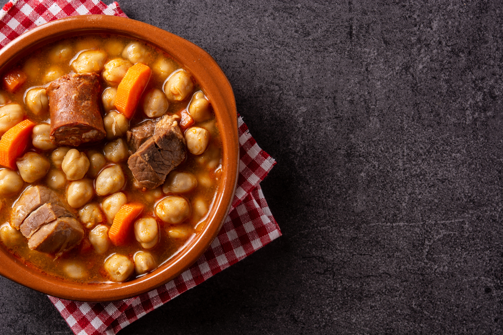

El cocido madrileño es uno de los platos más tradicionales y representativos de la gastronomía española. Se trata de un guiso completo y reconfortante, que simboliza la unión familiar y el arraigo cultural. Cada región tiene su propia versión, pero todas comparten el valor de la comida como acto social y afectivo.